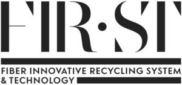

Trade Mark Journal No.2025/028 11 July 2025
WO0000001850194 (17,19,20,35)
Office of origin: Italy
Date of International Registration:23 December 2024
Date of designation in the UK:
23 December 2024

An imprint depicting the wording FIR ST FIBER INNOVATIVE RECYCLING SYSTEM & TECHNOLOGY in fancy characters, arranged on three lines, the wording FIR ST, larger in size, being interspersed by a bullet point between the portion FIR and the portion ST and underlined by a horizontal band placed above the portion FIBER INNOVATIVE RECYCLING SYSTEM, which in turn is partially underlined by a further horizontal band which is flanked on the left by the portion & TECHNOLOGY.
International priority date claimed: 8 August 2024
(Italy)
(302024000127018)
- Class 17
- Insulating panels; insulating panels composed of recycled cotton and polymers; fire-resistant insulated panels; acoustic insulating panels; acoustical insulation barrier panels; acoustic baffles for soundproofing purposes; panels of expanded polymers based on polyvinyl chloride [semiprocessed goods]; panels of expanded polymers based on polyvinyl chloride for use in manufacture; sound-dampening wall coverings; sound-absorbing ceiling coverings; insulating fabrics made of mixed synthetic and natural fibres; plastic fibres, other than for textile use; spun polyester fiber, other than for textile use; semi-worked polymer resins in the form of fibres; thermoplastic resins reinforced with natural fibers [semi-finished products].
- Class 19
- Panels, not of metal, for construction, furniture and interior decoration; panels, not of metal, for construction, furniture and interior decoration, composed of recycled cotton and polymers; panels, not of metal; panels, not of metal, composed of recycled cotton and polymers; wall panels, not of metal; sheathing boards, not of metal; acoustic panels, not of metal; building panels, not of metal; decking, not of metal; boards, not of metal, composed of recycled cotton and polymers; paving slabs, not of metal; building materials, not of metal; building materials with soundproofing qualities, not of metal; cladding, not of metal, for building; wall linings, not of metal, for building; wainscoting, not of metal; curtain walls, not of metal; dividing walls, not of metal, composed of recycled cotton and polymers; dividing walls, not of metal; panels, not of metal, for dividing walls; dividers for rooms [structures], not of metal; movable partitions [walls], not of metal; partitions, not of metal, for building; prefabricated walls, not of metal; buildings, not of metal; non-woven textiles made of synthetic fibers for use in the building industry.
- Class 20
- Furniture panels; panels for furniture, composed of recycled cotton and polymers; paneling for furniture; paneling for furniture composed of recycled cotton and polymers; panels [furniture] for use as partitions for offices; partition panels for rooms [furniture]; space dividers [furniture]; dividers [not of metal] [furniture]; partition panels; partition panels composed of recycled cotton and polymers; room dividers; dividing walls [furniture]; movable dividing panels [furniture]; tsuitate [Oriental singlepanel standing partitions]; portable dividing walls [furniture]; dividing walls [furniture] for offices; tables; tables composed of recycled cotton and polymers; directory boards; presentation boards; lap desks; cupboards; shelving units; furniture shelves; racks being furniture made of non-metallic materials; shelving bars [furniture].
- Class 35
- Retail and wholesale services, also on-line, in relation to insulating panels, insulating panels composed of recycled cotton and polymers, panels not of metal for construction, furniture and interior decoration; retail and wholesale services, also on-line, in relation to panels not of metal for construction, furniture and interior decoration composed of recycled cotton and polymers, panels not of metal, panels not of metal composed of recycled cotton and polymers, decking not of metal, dividing walls not of metal; retail and wholesale services, also online, in relation to panels not of metal for dividing walls, dividers for rooms [structures] not of metal, movable partitions [walls] not of metal, materials, not of metal, for building and construction, furniture panels, panels for furniture composed of recycled cotton and polymers, paneling for furniture, partition panels, partition panels composed of recycled cotton and polymers; retail and wholesale services, also online, of room dividers, dividing walls [furniture], tables, tables composed of recycled cotton and polymers, lap desks, cupboards, shelving units, furniture shelves, furniture, mirrors, picture frames; retail and wholesale services, also on-line, in relation to bags, cases and holders [leatherware], leatherware, leather and imitations of leather, animal skins and hides, luggage and carrying bags, umbrellas and parasols, walking sticks, whips, harness and saddlery, collars, leashes and clothing for animals; retail and wholesale services, also on-line, in relation to clothing, footwear, headwear; presentation of goods on communication media, for retail purposes; providing commercial information and advice for consumers in the choice of products and services; sales promotion for others; outsourcing services [business assistance]; procurement services for others [purchasing goods and services for other businesses]; demonstration of goods; shop window dressing; sponsorship search; business inquiries; providing business information; administrative processing of purchase orders; organization and management of customer loyalty programs; administration of consumer loyalty programs; auctioneering; auctioneering services provided on the Internet; commercial administration of the licensing of the goods and services of others; provision of an online marketplace for buyers and sellers of goods and services; providing business information via a website; sales prospecting for others; organization of fashion shows for promotional purposes; organization of events, exhibitions, trade fairs and fashion shows for commercial, promotional and advertising purposes; organization of trade fairs for commercial or advertising purposes; organization of advertising events; arranging and conducting of promotional and marketing events; event marketing; reception services for visitors [office functions]; news clipping services; public relations; online advertising on a computer network; advertising of goods and services on the Internet and by means of mobile telephony services and by electronic mail; billposting; rental of advertising space; publicity material rental; dissemination of advertising matter; advertising agency services; modelling for advertising or sales promotion; writing of publicity texts; publication of publicity texts; promoting the sale of fashion goods through promotional articles in magazines; distribution of samples; distribution and dissemination of advertising materials [leaflets, prospectuses, printed material, samples]; advertising planning services; promotional services; merchandising.
MONCLER S.P.A.
Representative: Dr. Modiano & Associati SpA, Via Meravigli 16, I-20123 Milano, ITALY